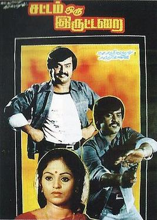

⭐ Captain Vijayakanth ⭐

About the Legend
☛ Narayanan Vijayraj Alagarswami was born on 25 August in 1952.Narayanan Vijayraj Alagarswami is better known by his stage name Vijayakanth.
☛ He was also called as Captain,Karuppu MGR,Puratchi Kalaignar and so on..
☛ He was an Indian Politician and Actor worked predominantly in Tamil Cinema.
☛ He was also known for portraying a patriotic, village do-gooder and dual role acting in his films. Many refused to play with him and great filmmakers did not show up to make films. He acted in more than 20 films as a police office
☛ Upon entering the film industry to pursue an acting career, he changed to "Vijayakanth", dropping the "Raj" out of his name and suffixing it with "Kanth," by his first film M. A. Kaja's Inikkum Ilamai (1979)
☛ He then had success with Sattam Oru Iruttarai (1981) , directed by S. A. Chandrasekhar; with whom he did movies mostly.
☛ In the 1980s and 1990s, he was an action icon with a consistent box-office appeal. He got the sobriquet "Captain" after the 100th film, Prabhakaran (1991)
☛ He formed the centre-left party Desiya Murpokku Dravida Kazhagam (DMDK) a regional political party in Tamil Nadu. He formally announced the party's formation on 14 September 2005 in Madurai
☛ The DMDK, led by Vijaykanth, proved to be an important player in the 2006 Tamil Nadu assembly election, garnering 10% the voters and securing 10.1% this Lok Sabha election.
☛ Vijayakanth declared that he would not ask donations for his party, and of the funding for the party comes from his own pocket.
☛ He founded Shri Andal Alagar College of Engineering in 2001 His wife was the chairperson of this college.
☛ On 1 October 2001, Vijayakanth declared that 1 October, which was actor Sivaji Ganesan's birthday, be observed as Actors' Day in Tamil Nadu.
☛ In 2001, he was the former president of South Indian Film Artistes' Association under his presidency, the debts of the association were cleared by organising celebrity shows overseas.
☛ Vijayakanth launched a 24-hour television channel called Captain TV on 14 April 2010.
He later launched a 24-hour news channel called Captain News on 29 August 2012.
☛ Honours
1.In 1994 - MGR Award
2.In 2001 - Kalaimamani Award
3.In 2001 - Best Indian Citizen Award
4.In 2011 - Honorary Doctorate
Flim Awards
* 1986 Best Actor Award - Amman Kovil Kizhakale
* 1988 Best Actor Award - Senthoora Poove
* 2000 Best Actor Award - Vaanathaippola
☛ He died due to pneumonia at a hospital in Chennai, on 28 December 2023 at the age of 71 He was on ventilator support after testing positive for COVID-19
For more information, check out Captain Vijayakanth on Wikipedia. [ Developed by @ Sanjay kannan. ]